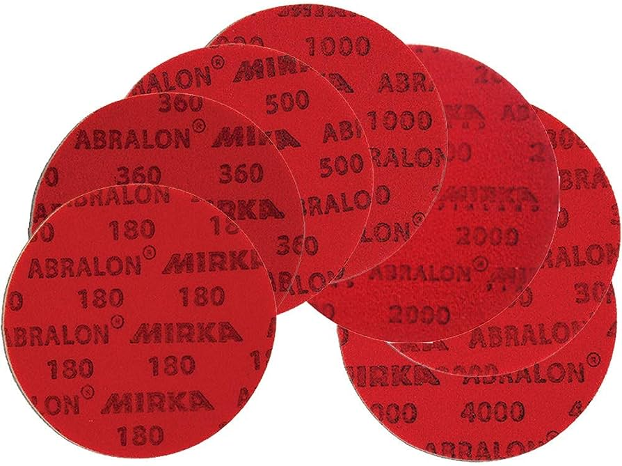
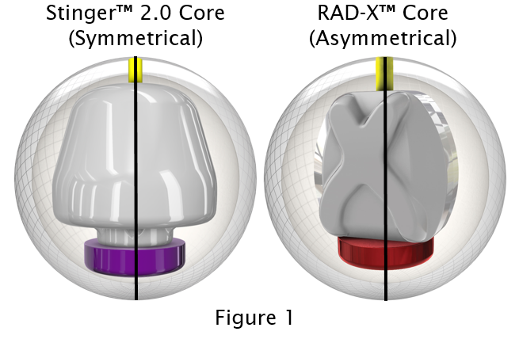
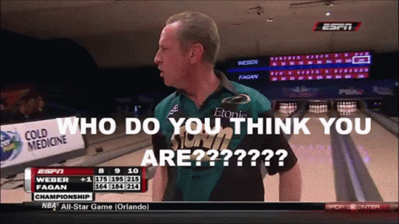

Well, there are 4 different ways that a ball can affect the performance down the lane. They are the coverstock, surface, core and layout. All of them affects the ball in some way and makes each ball similar but never the same. Some bowling balls have more use than others, but every ball has its time to shine.
A coverstock is you think it is, the cover of the bowling ball. There are 3 main genres of coverstocks in bowling, reactive, urethane and plastic coverstocks. Reactive coverstocks has 3 subcategories which will be covered later on. Here is a table that describes the differences between the different main coverstocks.
| Reactive Resin | Urethane | Plastic | |
|---|---|---|---|
| How much it hooks | Has the most hook potential | Not as much hook, starts hooking earlier | Little to no hook. |
| Benefits | Wide range of reactive balls, and can be used for a while before needing to change balls. | It is a very consistent ball and easy to control, used for dry or short patterns. | Mostly used for spares as it can be easily controlled to shoot straight to the pins. |
| Cost | Price can vary, depending on what reactive ball is in question. | Not as expensive as high-end reactive balls, but is still quite pricey. | The cheapest of the 3, mostly bought by beginners in a starter's kit. |
As mentioned in the paragraph above, reactive coverstocks has 3 different types, which is solid, hybird and pearls. Here is another table to show give a general idea of the differences.
| Solid | Hybrid | Pearl | |
|---|---|---|---|
| Strength | Hooks the least out of the 3 reactive coverstocks, usually more dull/dullest as compared to most balls. (e.g. Rotogrip Gem) | Is a mixture of pearl and solid, and usually is a ratio of pearl to solid. (e.g. Storm Hyroad) | Pearls are the strongest of the 3, most of the time is very shiny. (e.g. 900 Global Eternity) |
| When to throw and how it rolls | Throw on when the lanes have just been reoiled, or on patterns with light oil. Solids hook the earliest of the reactive coverstocks | Usually thrown around when the lanes start to transition, or on heavier oil patterns than solids. Hooks later than solids but earlier than pearls | Used on the later parts of the day, when the oil pattern has been heavily used, or on patterns with more oil. Hooks the latest with a sharp motion at the end |
Now that we have talked about the coverstocks, we will talk about surface. Basically surface is the polish of the bowling ball; how shiny/dull it is. Having a shiny ball means that the ball will hook later, while dull balls hook earlier.
So usually when a ball is mass produced, the finish of the ball will be the exact same. This is called the factory finish. Surfaces can then be modified by using an abralon pad. To apply surface on a ball, clean the ball, then rub the abralon pad in a circular motion evenly around the ball.
Abralon pads
Abralon pads come in many grit rating, ranging from 180-4000. However the more popular options are 500, 1000 and 2000. Most professionals depend on abralon pads during competitions, as most competitions only allow a limited amount of bowling balls in the arsenal . This means that the only way they can help their ball hook more/less is to use abralon pads.
A bowling ball core is what is inside a bowling ball and it is the heaviest part of the ball. It is often called a weight block. A bowling ball core is made of powdered metal oxides mixed with resin and a catalyst. A core determines how a ball will roll and rotate down the lane. While the lane surface and oil pattern will also contribute to ball motion, the core is probably the most significant factor to consider when purchasing a new bowling ball. A core can be symmetrical like a sphere, or asymmetrical like a lightbulb, which influences how the ball rotates down the lane. This influence can determine a bowler's performance.
example of symmetrical core and asymmetrical core
The layout is where your fingerholes are drilled on the ball, and affects where the core will be when thrown, thus can affect the reaction of the ball on the lane, especially with asymmetric balls, as where you drill affects how the core will be rolling down the lane. For beginners, layouts would not matter as much as your form will change over time. The most important thing about layout is the span(Your bowling ball span is the measured distance between the placement of the gripping holes used to hold the ball. The span refers commonly to the distance from the front edge of the drilled thumb gripping hole to the front edges of the two finger gripping holes), as having a span too long or too short can affect your release and form badly.
So basically, buying a bowling ball is something that people would do if they want to start to try taking bowling as a more serious sport(+shoes for sliding and more consistency). Ones style may vary based on personal preference, so don't try to bowl like other people, or use the balls they use and just bowl freely and enjoy the game!
